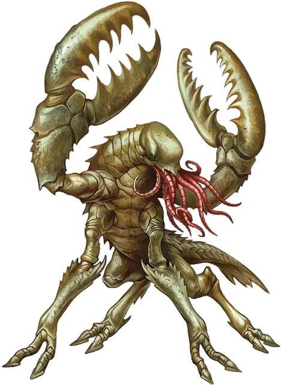

Чууль
Chuul
Большая Аберрация, хаотично-злая

Класс Доспеха 16 (природный доспех)
Хиты 93 (11к10 + 33)
Скорость 30 футов, плавая 30 футов
| мод | спас | ||
|---|---|---|---|
| СИЛ | 19 | +4 | +4 |
| ЛОВ | 10 | +0 | +0 |
| ТЕЛ | 16 | +3 | +3 |
| мод | спас | ||
|---|---|---|---|
| ИНТ | 5 | −3 | −3 |
| МДР | 11 | +0 | +0 |
| ХАР | 5 | −3 | −3 |
Навыки Восприятие +4
Иммунитет к урону яд
Иммунитет к состояниям отравление
Чувства тёмное зрение 60 футов, пассивное Восприятие 14
Языки понимает Глубинную речь, но не говорит
Опасность 4 (1100 опыта)
Бонус мастерства +2
Среда обитания Подземье
Особенности
Амфибия. Чууль может дышать и воздухом и под водой.
Чувство магии. Чууль чувствует магию в пределах 120 футов. Во всем остальном эта особенность действует как заклинание обнаружение магии, но не имеет магической природы.
Действия
Мультиатака. Чууль совершает две атаки клешнями. Если чууль держит в захвате существо, он может также один раз использовать щупальца.
Клешня. Рукопашная атака оружием: +6 к попаданию, досягаемость 10 футов, одна цель. Попадание: Дробящий урон 11 (2к6 + 4). Цель становится схваченной (Сл высвобождения 14), если у неё размер не больше Большого, и чууль держит в захвате не более двух существ.
Щупальца. Одно существо, схваченное чуулем, должно преуспеть в спасброске Телосложения Сл 13, иначе станет отравленной на 1 минуту. Пока цель отравлена, она парализована. Цель может повторять этот спасбросок в конце каждого своего хода, оканчивая эффект на себе при успехе.
Описание
Ровесники древней империи аболетов, чуули — это ракообразные, видоизмененные аболетами и получившие от них разум. Они следуют плотно засевшим в сознании командам создателей, полученным на заре времен.
Первобытные реликвии. В ранних эпохах аболеты правили обширной империей, охватывавшей все океаны мира. В те дни аболеты пользовались могущественной магией и подчиняли умы появляющихся существ смертных королевств. Однако они были привязаны к воде, и не могли навязывать свою волю за её пределами без слуг. По этой причине они создали чуулей.
Абсолютно послушные чуули собирали разумных существ и магию по приказам аболетов. Чуулей создали, чтобы они пережили эпохи, плодясь и размножаясь. Империя аболетов рассыпалась с возвышением богов, а чуули были брошены на волю случая. Однако эти существа продолжили делать то, что они делали раньше для аболетов, медленно собирая гуманоидов, накапливая сокровища и магию, и укрепляясь в силе.
Неутомимые стражи. Чуули по-прежнему охраняют руины древней империи аболетов. Они застыли в немом соблюдении команд, которым уже тысячи лет. Слухи и древние карты иногда приманивают искателей сокровищ к этим руинам, но награда за их дерзость — смерть.
Какие бы богатства исследователи не принесли с собой, они добавятся к сокровищам, которые охраняют чуули. Чуули могут чувствовать магию на расстоянии. Это чувство вместе с врождённой склонностью принуждает их убивать исследователей, брать их имущество и хоронить в секретном месте, продиктованном аболетами эоны тому назад.
Ожидающие прислужники. Хотя древняя империя аболетов давно пала, духовные связи между ними и их создателями остались целыми. Чуули, которые входят в контакт с аболетами, немедленно принимают свои старые роли. Такие чуули направляют все свои усилия на служение зловещим аболетам.